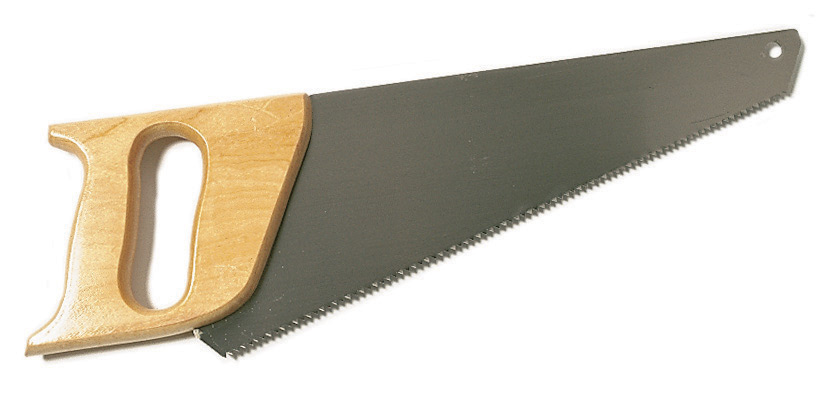
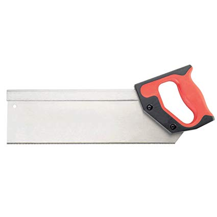
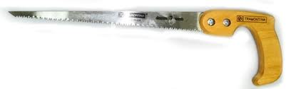
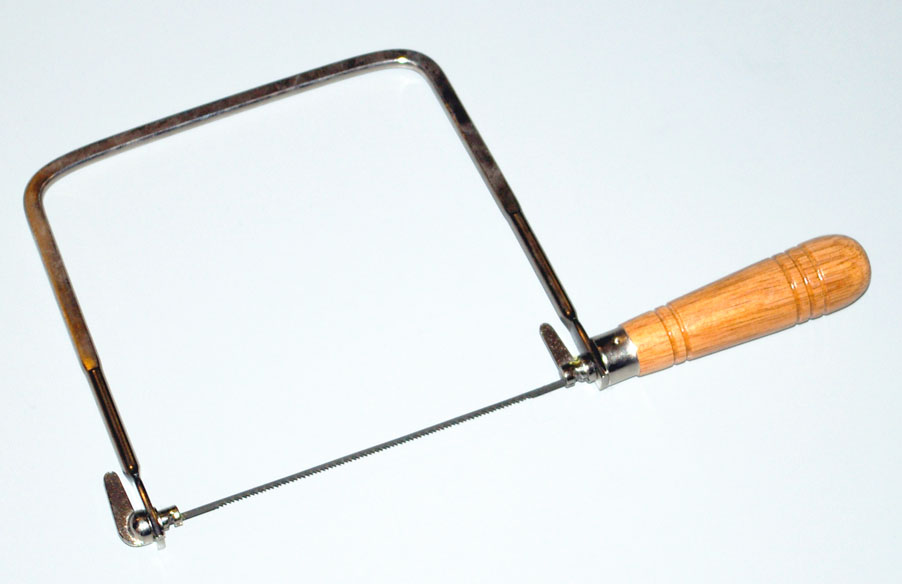
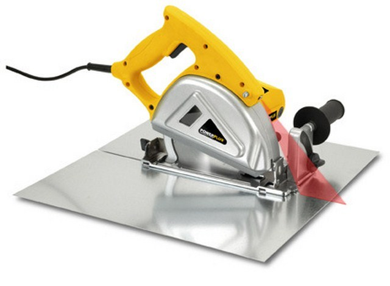

La Madera y sus derivados
Corte
Técnica para separar o dividir una pieza metálica. Las principales herramientas son:
|
Nombre |
Función |
Foto |
|
Serrucho |
Para cortes rectos de maderas de diferente grosor |
 |
|
Serrucho de costilla |
Para cortes de cierta precisión |
 |
|
Serrucho de punta |
Para cortes curvos, gracias a su estrecha hoja |
 |
|
Segueta |
Pequeña sierra con "pelos" planos o circulares, para cortar madera fina. |
 |
|
Sierra de arco |
Para cortes más precisos |
|
|
Sierra de calar |
Herramienta eléctrica manual para cortar planchas grandes |
|
|
Sierra circular |
Uso similar a la anterior |
 |


Obra publicada con Licencia Creative Commons Reconocimiento No comercial 4.0